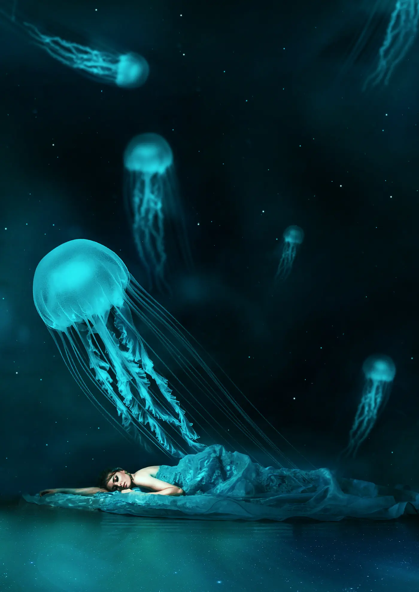
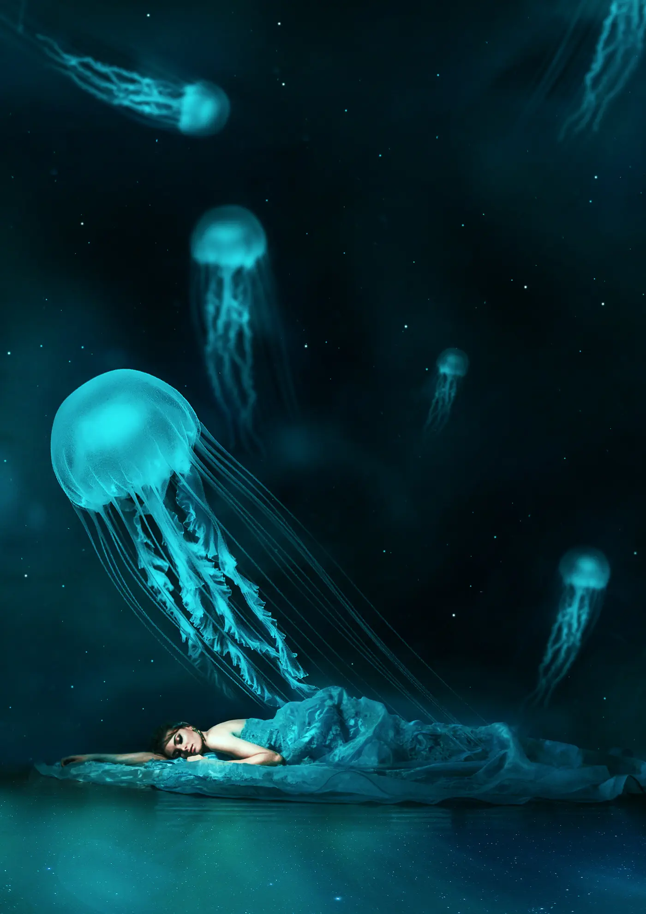
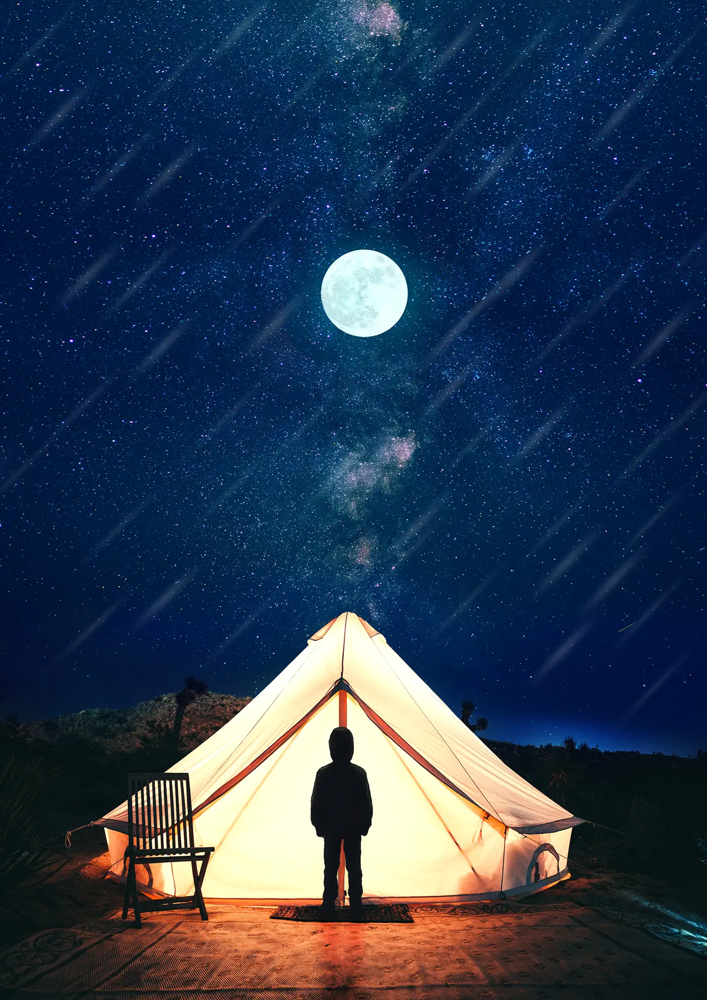
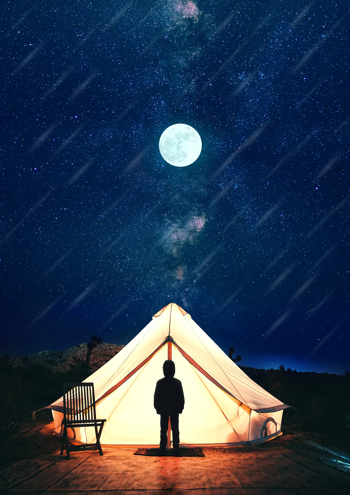

"Bir ulus sanattan ve sanatçıdan yoksunsa, tam bir hayata sahip olamaz."
Mustafa Kemal Atatürk
Tasarım
Hayal gücünü yakıt olarak kullananlara...
Grafik tasarımla lise döneminde ilgilenmeye başladım. İlk başlarda görsel içerikler oluşturmayı ve düzenlemeyi merak ediyordum; özellikle dijital manipülasyon ve sürreal çalışmalar beni heyecanlandırıyordu. O dönemde, ortalamanın altında bir bilgisayarla çalışarak sık sık hatalar ve çökme sorunlarıyla karşılaştım, ancak bu engeller beni yıldırmadı. Beceri geliştirmek için uzun saatler harcadım.
Geliştirdiğim bu beceriler sayesinde ilerleyen zamanlarda defalarca kez "İyi ki öğrenmişim." dediğim anlar oldu. Hem yerli hem de yabancı uzmanlarla tanıştım, bilgi alışverişi yaptım ve bakış açımı genişlettim. Grafik tasarım, sosyal medyada bilgi paylaşımı ve topluluklarıyla ilgili ufuk açıcı bir deneyim oldu. İnternet dünyasında doğru bilgiye nasıl ulaşabileceğimi, becerilerimi nasıl geliştirebileceğimi ve farklı dillerde dokümantasyon okumanın önemini öğrendim. Bu beceriler günümüzde büyük bir öneme sahip. Hangi alanda çalışırsak çalışalım, yeteneklerimizi ve niteliklerimizi geliştirmek için öğrenmeye devam etmeliyiz. Grafik tasarımın keyifli ve keşfedilmesi gereken bir uğraş olduğuna inanıyorum.
Tasarım çalışmalarımda en çok Adobe Photoshop'u kullanıyorum ve "Dijital Manipülasyon/Sürreal" konularına odaklanıyorum. Tasarımlarımın izinsiz kullanılmasını onaylamıyorum, bu yüzden bilgim olmadan kullanılmamasını rica ederim!
 


 
